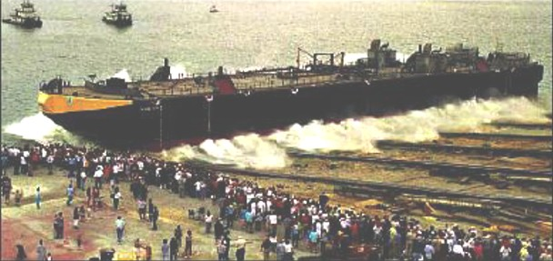

Square Ended Hull
Email thread between James King and Tim Lovett
JK: Fri, 16 Apr 2004
Tim: The new versions of the Gitt paper look good. I'll read it with interest. Thanks very much for the effort. In my lost e-mail on structure I had a comment on animal power. That is a great point! I suggested that you might want to consider elephants. They are obviously strong, but they are very intelligent, as well. They are used for lumbering and construction. After I hear about your comments on my hull stuff, I'll rework, as needed. Meanwhile, I'll get back to the structure stuff. Two hydro points: 1. I liked this comment, 'David "Which way would a "box"-shaped Ark have faced..." Tim. If you want it to point into the waves it helps if you make it pointy.' This sort of sums it up. 2. This is a preliminary piece of information. It looks like, from some recent Navy work, that the stresses on a blunt bow would be twice those on a tapered bow.
Thanks, Jim
JK: Thu, 15 Apr 2004
Tim: I still owe you a structural discussion, but I'll put that aside to deal with the hull form issue. The Gitt translation that you sent came through virtually unreadable - all sorts of embedded symbols – as though a word processed document came across as a text file. The text is there, just difficult to follow. Perhaps you could send it as an attachment? Apparently my extremely poor reading of the German did not pick up on some of his major points. I'm not familiar with Collins' paper. It was very interesting to read the collective comments. I was puzzled about who "Jono" was. Eventually I learned that it was J. Sarfati -- who I really respect (based on his writings). On the wind speed issue, do you know of anybody who has looked into the earth drying? What sort of wind would it have taken to dry the earth? My write-up on the hull form is attached. It is a Word file.
God bless! Jim
|
ARK HULL - BLUNT OR SHIP-LIKE ? James King April 15 2004 It's hard to know where to start with the collected comments, but I'll give it a go. We need to keep our eye on the purpose of the exercise. Perhaps others have a different perspective, but mine is to demonstrate the ark's feasibility - or to support previous feasibility studies. So, we could be arguing over a relatively minor point - except that the NA community will dismiss something that is unrealistic, even if the fundamental feasibility is still proven. As I mentioned yesterday, some previous work has been very poorly received and hurt the cause. So, let's assume that God gave Noah the insight to build a strong, safe barge. What should it look like? I've tried to be fair in the following discussion. WHY SHOULD IT BE BLUNT-ENDED? 1. Some believe that the word for "ark" may mean box and imply rectangularity. 2. Some scholars (medieval and renaissance period) drew it that way. Rebuttal 1. There is reasonable question about whether the language implies rectangularity. I am not a Hebrew scholar and cannot comment with authority. 2. The ancient scholars knew little about ship design. This was before scientific NA. However, even a shipwright of those times would have known to build the barge with tapered ends. The Kircher illustration shows ends that are structurally unfeasible and the Lutherbible illustration does not show an end. WHY SHOULD IT BE "SHIP-LIKE"? 1. Barge would point into the sea providing greater comfort. This applies to moderate seas and rough seas. 2. Barge would be much less likely to broach. This applies to moderate and rough seas 3. Because barge would be much less likely to broach it would be much less prone to capsize. This applies to rough seas 4. Improved feasibility for terminating the ends of a wooden ship. It makes for a much more effective joint 5. Reduced loads on the bow and stern from wave slap. Rebuttal 1. God would grant grace to the occupants. 2. The ark is so big that this would not matter. 3. The ark is extremely stable. Wind could not capsize it. 4. Nothing 5. Nothing Redirect 1. God is certainly gracious. We could, however, use that argument for any physical constraint. I would prefer to think that God's grace was manifested in guiding Noah to design a good ark.. Comfort is very important. I sailed for some time in a tanker about 600 feet long and about 40000T. In ballast condition (closest to the ark) it could be very uncomfortable. I was not the only one who got sick in storms. 2. In even a moderate sea, the ark would broach. I've never been on a broached ship, but I've seen models in a broach. 3. Wind rarely capsizes a ship - it is usually waves. When we do capsize model tests, it is without wind. So, you might ask, why is there a wind-heel criterion in static stability. The history is very long and dates back to WWII and a paper written by Sarchin and Goldberg based on the WWII experience. It is essentially an empirical solution to the stability problem. The wind heel calculation should not be taken literally. This is a short description of a long technical problem. Incidentally, in WWII, some US Destroyers lost power, broached, and capsized. As you've said in your notes, it is a dynamic problem. The static stability criteria are just a first cut. As we've corresponded, large stability is not necessarily a plus. Very large GM contributes to short roll periods, thence large accelerations and uncomfortable, even dangerous, ride. A FEW OTHER NOTES 1. I think that the weights and centers analyses that we've done and the structural work underway will indicate a much higher CG than previously used. As we've discussed the T/D ratio of ½ may not be really be required by Scripture and seems excessive. This would reduce the GM. 2. The "pointy"-ended ark is not all that pointy. I'm trying to put together some kind of illustration to show what this might look like. I've built an incomplete hydrostatic calculator but need to make a better illustration. 3. Some might object to my concern about comfort. Remember that Noah, his family, and the animals sailed on a very long voyage (approximately one year). It is very uncommon for a ship to sail that long. Extended period of discomfort, and even seasickness could be totally debilitating - even dangerous. And that does not even consider what would happen if the animals got sick. 4. We do not know what the winds and waves were like. We could assume that they were always gentle. But consider this:
CONCLUSION I think that it is pretty clear. The ark was probably built like an ocean-going barge would have been built today - very full, but with slightly pointed ends. This would have provided:
Freedom Ship: I was actually quite familiar with an earlier version of the design. I cannot tell for sure from the illustrations, but the concept seems similar. If so, the hull has a more or less conventional bow but it transitions into a catamaran. The Freedom Ship is actually much "pointier" than the ark would have been. This supports the point for a tapered bow.
|
TL: Sat, 17 Apr 2004
Elephants - yes, I've had them recommended too. Not so easy finding info about them though. Nice picture of a mammoth in the latest Noah's Ark book however. Very strong choice as a 'forklift' at least.
"2. This is a preliminary piece of information. It looks like, from some > recent Navy work, that the stresses on a blunt bow would be twice those on a tapered bow."
Did you mean to attach this? Quantitative data like this is a goldmine - perfect for backing the argument. Numbers are so much better than the jostle of 'opinions', so in combination with expert opinion (NA), I think it would be excellent.
I built an ark model with dead square ends (because it is easy to make) and I noticed the bow would tend to plough into the waves (in a lake). I expect some more rake would fix this, and pointiness would cut the wave to make it deflect to the sides. The AMOUNT of pointiness, or proportion of parallel midsection I expect would be a diminishing return function, so the full form / pointiness compromise might be (sort of) optimised in the ocean going barge. Now if the degree of tapered could be quantitatively defined in terms of hull stress/accelerations/greenwater then we'd be laughing...I expect this is a tall order, but maybe the navy thing is a good start.
Oh, you also mentioned a stability calculator. For static roll stability I have this pretty well covered (at least I thought so, certainly ahead of Morris, Collins, Gitt) and this could easily be modified to include static pitching ... but I'm wary of my dynamics efforts because of the damping/turbulence issues. What sort of stability calculator do you mean? 3D hull form? I could do this too, but not sure how valuable...
And...surely you have access to software at work that can give us some figures if a hull is defined - like an FEA stress analysis or CFD of wave forces or something? I can throw the gross structure at an FEA program we use for my students, but it is a relatively basic program - in terms of application of loadings.
Compiling the TJ article...
I am going to compile the information for the TJ article in the restricted (unlinked) area on the website. Andrew (AiG information officer) sent me some more articles dealing with the wave/wind issue. So as this builds up it will be easier to access information etc. Also means others can see what's going on if they have the link.
Hull & structure...
The structure stuff is also part of this article - the fact that the bow/stern is difficult in rectangular or (particularly) semi-rectangular form. I can illustrate this pretty well if you just give a quick handsketch with a few dimensions... I certainly had trouble imagining how a tight radius would be done! ...
I still have concerns about bilge radius here too - how do you envisage this detail?
What do you think of diagonal, layered planking on the hull? I'm not sure what happens here with a bilge radius...You're thoughts on the monocoque/frame discussion? I guess you would have told me by now if there was something you really objected to.
Finally, I realise there is a RANGE of feasible hull designs, so I am attempting to define some limits to that range...
Thanks, it's looking promising so far... TIM
JK: Sat, 17 Apr 2004
Tim:
Here is a photo of an oceangoing barge. It was difficult to find a good one. Part of the problem has been that many oceangoing barges are part of Integrated Tug Barge Units. They are streamlined because they travel at pretty high speed. This looks like a barge to be towed. You can see that this bow is not only tapered, but raked. I think that is pretty extreme. The stern appears to have a very deep cut-up with very deep skegs.
Jim

TL: Sun, 18 Apr 2004
Thanks Jim...
Picture source?
I guess the ark is fairly unique. An open ocean vessel that didn't have to move... In a rough sort of way I decided rake = ride over the wave, and taper = slice through it. It was very clear to me that the rake=0, taper=0 hull tended to dig INTO a wave. So what happens to a blunt sterned barge without power in heavy seas?
Did you have the source data for that navy info you mentioned one about the flat bow doubling the loading...
From a structural/construction point of view, I'm thinking that a near round bow in the easiest - plus some rake. I'm wondering how much improvement would be gained by coming to a point - and how or whether this could be quantified. There are big tankers with elliptical bows...
Here's a little bit I found in "Ship Design for Efficiency and Economy" H Schneekluth 1998, p38 Which has some "Rule of thumb' type info... Raked Stem:(Advantages) 1. Water deflecting effect 2. Increase in reserve buoyancy (Sounds like riding over a big wave to me)
V over U form.(forward section shape in elevation) Easier to make, no slamming, increased reserve buoyancy, bigger deck area. Disadvantage - greater wave making resistance.
Flare: deflects green seas, reserve buoyancy, righting moment maximized. Disadvantage - high accelerations and loads.
Parabolic bow: Reduced drag with Cb>0.8, for Froude No 0.11 to 0.18 - which is probably irrelevant here of course, and esp for low L/B ratios - which I presume the ark's 6:1 ratio definitely is. So if these tankers lose power in a storm does the parabolic bow compromise their direction keeping ability compared to the sharp waterline bow?
JK: Sun, 18 Apr 2004
Tim:
Good Lord's day, though it's probably Monday over there.
I got the picture from a web site. Port of Baltimore. I can find the exact reference.
The source for doubling the loading comes from a conversation with a colleague. It comes from the loading that will be imposed on a deckhouse on a ship that will see a lot of green water. And comparing that to the typical values for a bow. The difference would probably be higher because the deckhouse in question actually is above the bow and the loads could be reduced. I'm trying to find some exact values or an algorithm. As you know, the class societies stipulate scantlings rather than load for bow plating.
If you think that our bow controversy has been something, you should participate in the general NA controversy regarding bow form. I've seen people scream at one another over this.
V or U is largely a matter of culture, in my opinion. In our case, it probably does not matter much. Although the US preference is toward V, the bow I've drawn for the ark is U.
The near round bow is usually used for very large tankers (300,000+ DWT). In their case, the size tends to dominate over many other factors. And resistance is not an issue for them, as it is for us. I would tend to stay away from that in our case, though it is preferable to a blunt bow. These tankers are aimed, rather than, mastered. They are very difficult to control because of their size, hull form, and low power to displacement ratio. When things go wrong with them, it tends to happen near a coast. Because they are not controlled, they sometimes end up on the rocks. You may recall the Prestige accident off the Spanish coat two years ago -- very embarrassing for all concerned.
I'm not sure that a round bow would be easier to build. There is an advantage to tie into a stem. That would tend to go with a tapered bow. I was looking at some of the illustrations from the Master Books book about the Ark. They all had a stem and some looked like the bow was somewhat tapered. Maybe it's my eyesight.
See you, Jim